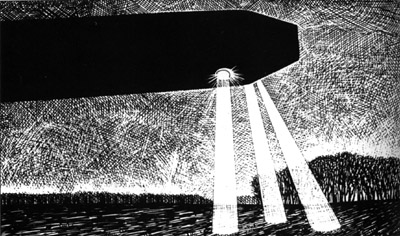

Un phénomène lumineux vu simultanément par des centaines de témoins à travers tout le pays, en direction du
sud-ouest vers le nord-est. Pas moins de 233 procès-verbaux parviendront au bureau de Jean-Jacques Velasco,
ainsi que 614 témoignages de particuliers et 5 rapports de pilotes civils et militaires. Après enquête, le SEPRA indiquera 4 jours plus tard qu'il s'agissait de la rentrée
atmosphérique du 3ème étage d'un lanceur soviétique Proton, ayant servi 2 jours avant à la mise en orbite
d'un satellite. Cet objet cylindrique serait
rentré à 110 km d'altitude environ sur la France et se serait dispersé à 83 km d'altitude au-dessus de la région de
Francfort (Allemagne).
Philippe Ughetto (photographe de l'agence Magnum), et son
assitant fixent sur la pellicules (photos ci-contre) depuis les toits des immeubles de Gennevilliers le vol d'un
avion. L'image, publiée par Paris-Match, sera présentée plus tard à tort comme le phénomène observé par toute la
France à ce moment-là.
A Argenteuil (Val d'Oise), observation d'une forme en carré de
grande dimension Gazette
du Val d'Oise, 16
Juillet 1997.
A Commeny (Val d'Oise), à l'intersection de la D 43 et de la N 14, observation
d'une forme en triangle de 50 m par 30 m, évaluée à 1 km de distance maximum et 400 m du sol Gazette
du Val d'Oise, 16 Juillet 1997.
A L'Isle-Adam (Val d'Oise), une forme triangulaire survole le centre-ville, réalise
2 virages successifs, et disparaît très vite Gazette
du Val d'Oise, 16 juillet 1997.
MmeL. et ses filles M (13 ans) et C (12 ans) se trouvent chez elles quand elles
observent dans le ciel les évolutions d'un engin insolite. Mme L. pense d'abord à un avion en difficulté
cherchant à se poser sur l'aérodrome et se rend même sur place pour vérifier. Puis, prise d'un doute car n'ayant
entendu aucun bruit au passage au-dessus de chez elle de cet "engin", elle décide de prévenir la gendarmerie à 20:00.
A Cergy (Val d'Oise), observation d'une forme triangulaire en vol
lent, avec 2 rayons braqués vers le sol Gazette
du Val d'Oise, 16 Juillet
1997.
Interprétation picturale de l'observation de Blandine Mariotte ce jour-là à 19:15 Banque OVNI

Près de Vert-le-Grand (Essonne), sur la route D31 en direction de La
Ferté-Alais, Blandine Mariotte observe l'ovni représenté ci-contre. Il est près de la route, silencieux et immobile.